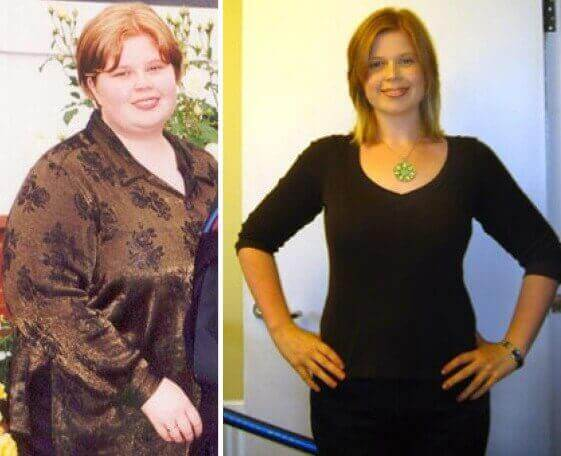

In Italia dal , è stato lanciato il progetto «Normal weight», sviluppato nell'ambito del Programma Paneuropeo «Let's be healthy»,che è stato approvato dal governo nel . Per saperne di più sul programma, abbiamo chiesto di dire al capo cardiologo Italiano, medico di alta categoria, il professor Giulio Giacomi .
Giulio Giacomi: il sovrappeso nella società moderna è il fattore numero uno nella comparsa di malattie cardiovascolari, oncologiche e altre malattie pericolose. E il problema peggiora nel tempo.
La complessità della sua soluzione è che la nostra dieta è dominata da alimenti convenienti, facilmente digeribili e ipercalorici. D'altra parte, l'attività fisica di una persona diminuisce costantemente.
Numerosi studi condotti in istituzioni sia nazionali che straniere hanno rivelato un chiaro legame tra eccesso di peso e incidenza di malattie cardiovascolari. Quindi un eccesso di peso corporeo normale di 10 kg aumenta il rischio di malattie coronariche, ictus o infarto del 35%. E in caso di eccesso di peso corporeo di 30 kg rispetto al normale, il rischio di qualsiasi malattia cardiovascolare raggiunge quasi il 100%.
Darò alcune altre cifre sbalorditive. Gli stessi 10kg di peso in eccesso riducono la vita di una persona in media di 4 anni e 30kg-per ben 15 anni.
Tenendo conto dell'importanza della correlazione del peso con la salute della nazione, l'Istituto di malattie cardiovascolari di Barnaclínic ha sviluppato il progetto "Normal weight" nell'ambito del programma paneuropeo "Let's be healthy". Implica un approccio integrato per risolvere questo problema. Ma l'enfasi principale è sulla diffusione diffusa di moderni farmaci sicuri per la perdita di peso.
Sfortunatamente, i medici hanno iniziato a occuparsi di questo problema
troppo tardi e fino a poco tempo fa non esistevano farmaci progressivi e
universali per la perdita di peso. Ma grazie agli sviluppi attivi e
diligenti del un team di scienziati del Grup Hospital Clínic
Barnaclínic, è stato comunque inventato uno strumento. Proprio questo è
progressivo e universale allo stesso tempo. La polvere solubile in acqua
Keto
Coffee Premium è stato sviluppato sotto l'egida
dell'Organizzazione Mondiale della Salute e molto apprezzato dai
principali specialisti del loro ufficio centrale.
I principali vantaggi di questo farmaco:
1. È assolutamente sicuro e consente la perdita di peso anche al ritmo
di 20 kg al mese.
2. Ti permette di condurre uno stile di vita normale. Quindi, non c'è
bisogno di seguire una dieta e andare in palestra.
In altre parole, Keto Coffee Premium soddisfa pienamente i requisiti di una persona moderna: perdere peso rapidamente senza conseguenze per la salute e senza dover cambiare il solito stile di vita. È disponibile sotto forma di polvere solubile in acqua. Puoi prendere da 1 a 3 volte al giorno.
Il suo principio di azione è simile al principio di una dieta chetogenica molto popolare negli ultimi anni, quando la priorità nella nutrizione non è fatta sui carboidrati, ma sui grassi. In questo caso, il fegato inizia a produrre i cosiddetti corpi chetonici, che riducono il grasso. Ma questa dieta è piena di difetti. In primo luogo, i carboidrati sono anche necessari per il corpo. E con una tale dieta, non entrano nel corpo umano. In secondo luogo, il carico sul fegato aumenta, perché molto più grasso inizia ad entrare nel corpo. Il farmaco Keto Coffee Premium è privo di queste carenze. NON richiede rinunciare carboidrati.
Noto che non ha bisogno di aderire a nessuna dieta. Una persona mangia come è abituata a mangiare. Pertanto, la normalizzazione del peso con l'aiuto di Keto Coffee Premium non provoca assolutamente alcuna situazione stressante per il corpo.
Il farmaco ha superato tutti i test necessari presso il Grup Hospital Clínic Barnaclínic ed è approvato per l'uso nell'UE.
Sfortunatamente, a causa del fatto che il prodotto non è stato finanziato dall'OMS, non è possibile distribuirlo gratuitamente tra la popolazione. Ma poiché Keto Coffee Premium è entrato temporaneamente nel progetto paneuropeo “Normal weight”, il costo del farmaco è significativamente ridotto rispetto al mercato.
Per la rapida distribuzione del farmaco Keto Coffee Premium , è stato deciso di creare un sito Web ufficiale attraverso il quale qualsiasi italiano online può acquistare Keto Coffee Premium a un prezzo scontato.
Il periodo promozionale di distribuzione della polvere solubile in acqua per il dimagrimento Keto Coffee Premium valido fino a compreso. Quindi, in base ai suoi risultati, verrà presa una decisione sull'ulteriore utilizzo di Keto Coffee Premium nell'ambito del progetto paneuropeo "Normal weight".
Sono personalmente interessato al fatto che ogni italiano in sovrappeso abbia fatto una richiesta sul sito ufficiale per il farmaco Keto Coffee Premium. La loro liberazione dal sovrappeso sarebbe quindi anche la mia vittoria personale come medico laureato.
Vi ricordiamo che il Programma Paneuropeo con il supporto DELL'OMS è valido solo fino al compreso.
Commenti: 17
